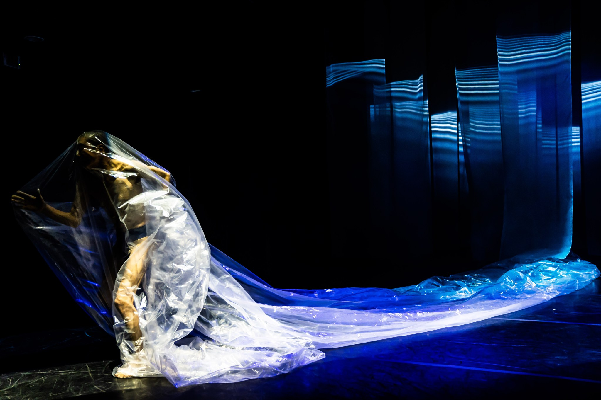

PRESS · STORIES · PUBLIC RECORD
NEWSARCHIVE
문화예술의 현장에서 시작된 이야기를 모아,ARA KOREA가 사회와 만난 시간을 기록합니다.

01 / IN THE PRESS
공연과 캠페인, 영화와 국제 활동의 장면을 모아문화가 사회 안에서 확장된 흐름을 보여줍니다공연과 캠페인, 영화와 국제 활동의 장면을 모아 문화가 사회 안에서 확장된 흐름을 보여줍니다
언론 보도는 작품이 관객과 만나고 공공의 관심으로 이어진 과정을 담습니다. 국립극장의 문화 캠페인부터 메타버스와 예술영화, 독도와 사회적 연대를 다룬 활동까지, 이 아카이브는 ARA KOREA의 작업이 시대와 교류해 온 궤적을 전합니다.
02 / FEATURED STORIES
Recent Coverage
문화 캠페인과 창작 프로젝트의 현재를 다룬주요 언론 보도를 살펴보세요.

03 / PUBLIC RECORD
FROM PROJECT TO PUBLIC CONVERSATION
Stories Across Time
각 기사는 한 시기의 소식을 넘어 작품이 사회적 의제와 만난 방식, 새로운 매체로 이동한 과정, 국제적 네트워크가 형성된 배경을 보여줍니다. 축적된 보도는 ARA KOREA의 문화적 활동이 넓어져 온 시간을 입체적으로 연결합니다.
View the complete archive04 / PRESS ARCHIVE